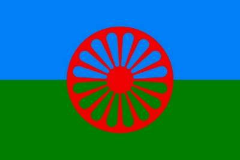

Борис Акунин
Мой календарь
Сегодня Международный день цыган. Хороший повод поискать в себе нечто цыганское. Большинству из нас в нашей оседлой, размеренной жизни это очень не помешало бы.
Для многих европейских народов цыгане всегда были символом свободы, бесшабашности и праздника. Особенно для русских, вечно связанных по рукам и ногам законами своего угрюмого государства. Единственной зоной воли и удали был табор, где звенят бубны и скатерть белая залита вином. Квинтэссенция извечной русской тоски по цыганской свободе - лесковский «Очарованный странник» и толстовский «Живой труп». Там Протасов в знаменитой «цыганской» сцене говорит про песню, которую, говорят очень любил сам Лев Николаевич:
- Это степь, это десятый век, это не свобода, а воля… Теперь «Невечерняя»!
Скучен тот, в ком нет ничего цыганского, кого не тянет хотя бы изредка оторваться от повседневности - и за кибиткой кочевой, на закат, где дрожат паруса.
Сегодня слушаем цыганскую музыку (Бизе тоже подойдет). Совершаем бесшабашные поступки. Одеваемся в синее и зеленое. Обязательно отправляемся куда-то на колесах, потому что этим символом вечного странничества украшен международный цыганский флаг.
И вот еще что. 8 апреля вечером у цыган принято выходить на улицу с зажженной свечой. Попробуйте. Даже если не встретите других цыган, одного точно найдете - самого себя.